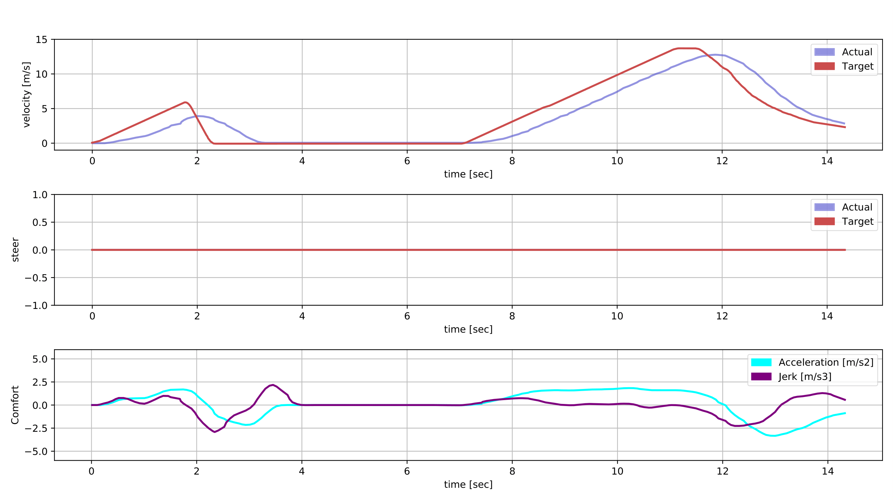
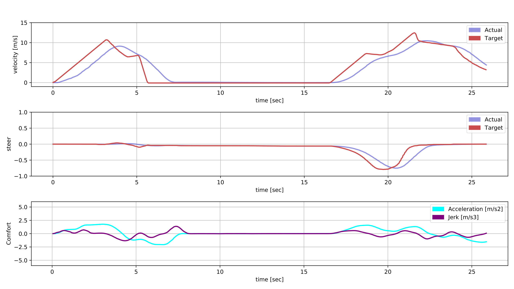
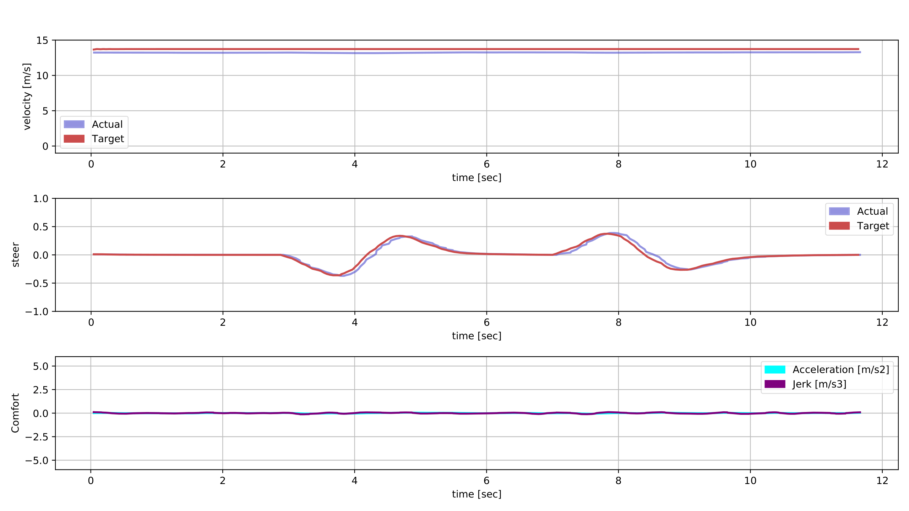
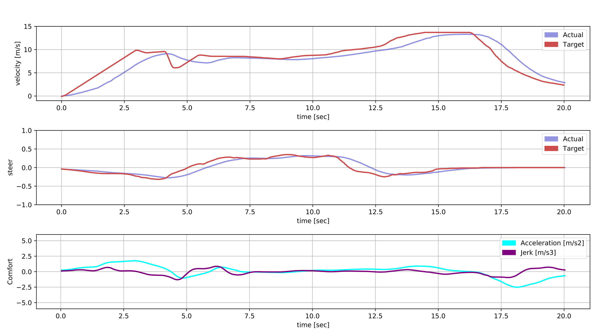
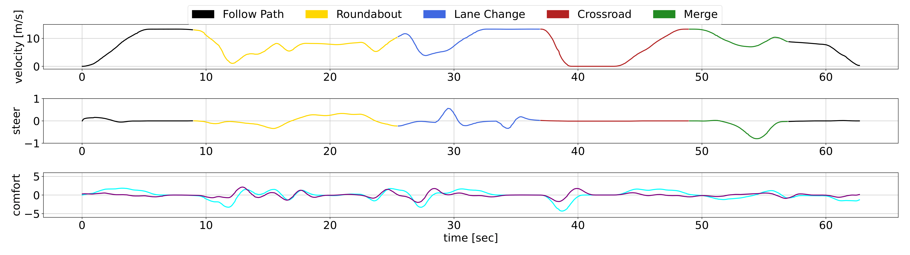
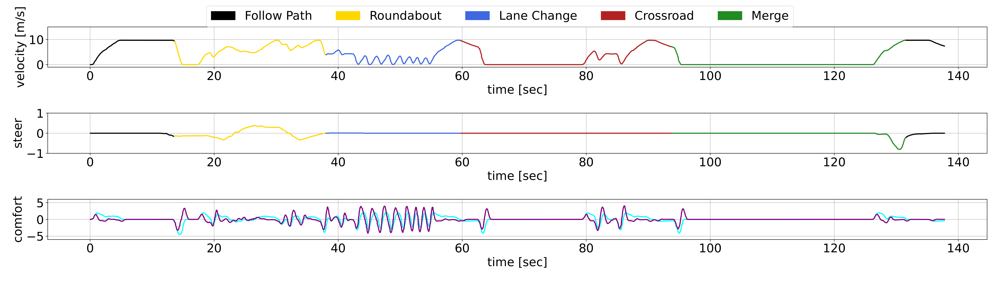
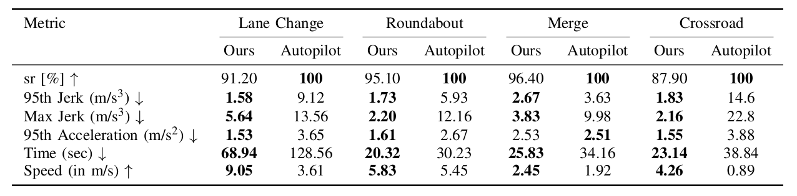

The use of Deep Learning algorithms in the domain of Decision-Making for Autonomous Vehicles has garnered significant attention in the literature in the last years, showcasing considerable potential. Nevertheless, most of the solutions proposed by the scientific community encounter difficulties in real-world applications. This paper aims to provide a realistic implementation of a hybrid Decision-Making module in an Autonomous Driving stack, integrating the learning capabilities from the experience of Deep Reinforcement Learning algorithms and the reliability of classical methodologies. This work encompasses the implementation of concatenated scenarios in simulated environments, and the integration of Autonomous Driving modules. Specifically, the authors address the Decision-Making problem by employing a POMDP formulation and offer a solution through the use of DRL algorithms. Furthermore, an additional control module to execute the decisions in a safe and comfortable way through a hybrid architecture is presented. The proposed architecture is validated in the CARLA simulator by navigating through multiple concatenated scenarios, outperforming the CARLA Autopilot in terms of completion time, while ensuring both safety and comfort.
Realistic simulation including vehicle dynamics.
The ego vehicle must cross the intersection while vehicles are coming from both sides.

The ego vehicle stops due to the adversarial vehicles and starts moving when it identifies a gap. The control signals and comfort metrics are represented below.

The ego vehicle must merge into the right lane while vehicles are coming from the left side.

The ego vehicle stops due to the adversarial vehicles and starts moving when it identifies a gap. The control signals and comfort metrics are represented below.

The ego vehicle must drive until the end of the road while vehicles are driving in this road.

The ego vehicle changes lane two times resulting in the shown control signals.

The ego vehicle must merge into the roundabout and leave it in the second exit.

The control signals are represented for the vehicle approaching and merging into the roundabout.

The ego vehicle drives through all the previously introduced scenarios in a concatenated way.

The first chart shows the ego vehicle performance while the second one presents the CARLA Autopilot signals under the same scenario.


The comparison using different metrics between our proposal and the CARLA Autopilot.

@article{gutierrez2024hybrid,
author = {Gutiérrez-Moreno, Rodrigo and Barea, Rafael and López-Guillén, Elena and Arango, Felipe and Bergasa, Luis Miguel},
title = {Enhancing Autonomous Driving in Urban Scenarios: A Hybrid Approach with Reinforcement Learning and Classical Control},
journal = {Sensors},
year = {2024},
}